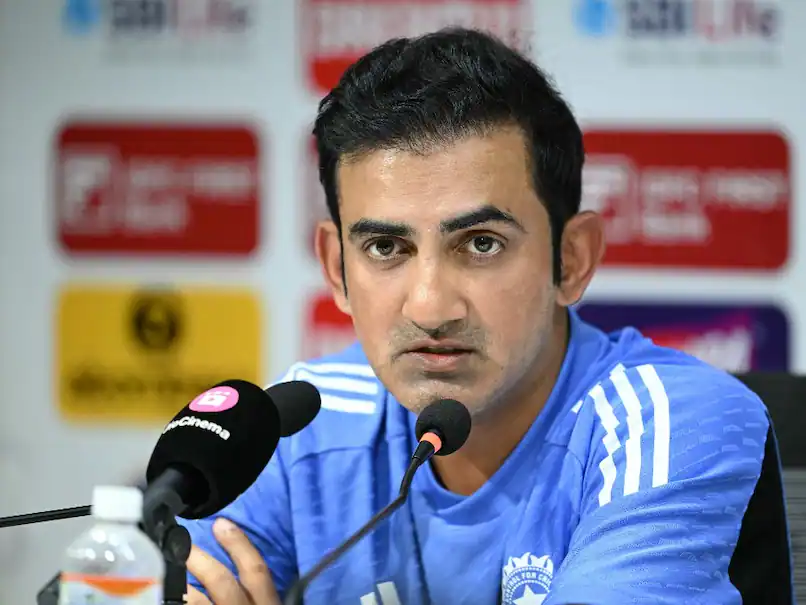
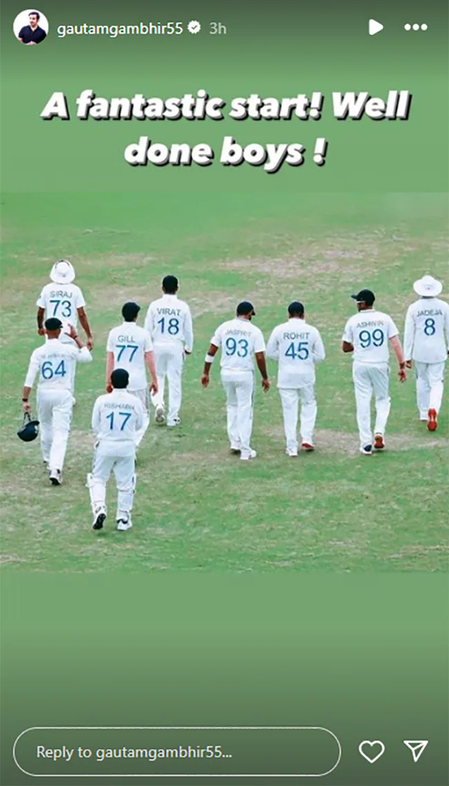
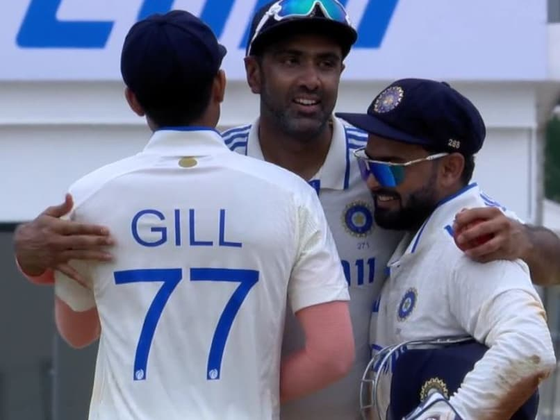

The Indian cricket team completely outplayed Bangladesh to register a mammoth 280-run victory in the first Test match in Chennai on Sunday.
The Indian cricket team completely outplayed Bangladesh to register a mammoth 280-run victory in the first Test match in Chennai on Sunday. Chasing a target of 515, Bangladesh never looked in the hunt as they were bowled out for 234. Ravichandran Ashwin was the pick of the Indian bowlers as he took 6 wickets for 88 runs. It was also a special win for head coach Gautam Gambhir as it was his maiden Test victory in charge. Gambhir took to social media to post a special message for the team following the win as he wrote - "A fantastic start! Well done boys!".
Meanwhile, India captain Rohit Sharma on Sunday emphasised on building his team around "strong bowling options" in order to take the conditions out of the equation as they gear up for the challenges that lay ahead in the run-up to the World Test Championship. Riding on a brilliant all-round performance, India cantered to a massive 280-run victory in the first Test against Bangladesh with five sessions to spare.

"Probably God-Sent": Ravichandran Ashwin Hails Rishabh Pant's 'Miraculous' Comeback After AccidentR Ashwin emphasized his unwavering belief in Rishabh Pant's abilities, saying, "I was never in doubt of his comeback."Asian News InternationalUpdated: September 22, 2024 03:53 PM ISTRead Time: 3 min "Probably God-Sent": Ravichandran Ashwin Hails Rishabh Pant's 'Miraculous' Comeback After Accident R Ashwin commended Rishabh Pant's remarkable comeback© X (Twitter) Following India's triumph over Bangladesh in the first Test in Chennai by 280 runs, veteran spinner Ravichandran Ashwin addressed the post-match press conference and commended Rishabh Pant's remarkable comeback. "I don't think Rishabh's form and ability were ever questioned. It's the way he came back and put himself out there that is miraculous, which is probably God-sent," Ashwin stated in the post-match press conference. "I didn't think he felt any pressure. He is entertaining and will only get better. He never lacked any confidence, and he will always have the backing of the team."
"Probably God-Sent": Ravichandran Ashwin Hails Rishabh Pant's 'Miraculous' Comeback After AccidentR Ashwin emphasized his unwavering belief in Rishabh Pant's abilities, saying, "I was never in doubt of his comeback."Asian News InternationalUpdated: September 22, 2024 03:53 PM ISTRead Time: 3 min "Probably God-Sent": Ravichandran Ashwin Hails Rishabh Pant's 'Miraculous' Comeback After Accident R Ashwin commended Rishabh Pant's remarkable comeback© X (Twitter) Following India's triumph over Bangladesh in the first Test in Chennai by 280 runs, veteran spinner Ravichandran Ashwin addressed the post-match press conference and commended Rishabh Pant's remarkable comeback. "I don't think Rishabh's form and ability were ever questioned. It's the way he came back and put himself out there that is miraculous, which is probably God-sent," Ashwin stated in the post-match press conference. "I didn't think he felt any pressure. He is entertaining and will only get better. He never lacked any confidence, and he will always have the backing of the team." PlayUnmute Fullscreen Ashwin emphasized his unwavering belief in Pant's abilities, saying, "I was never in doubt of his comeback." Ashwin's comments reflect the team's confidence in Pant's talent and resilience. Day 4 of the Chennai Test began with India needing six wickets and Bangladesh needing 357 runs more to win the first match of the two-match series. For India, Ashwin snapped six wickets in his spell of 21 overs, where he conceded 88 runs. Three wickets were bagged by Jadeja in his spell of 5.1 overs where he conceded 58 runs and bowled two maiden overs. One wicket was taken by Jasprit Bumrah where he conceded just 24 runs and bowled two maiden overs in his 10 overs. At the time of drinks, Bangladesh were 194/4, with Najmul Hossain Shanto (64*) and Shakib Al Hasan (25*) unbeaten on the crease. After drinks, off-spinner Ravichandaran Ashwin provided the first breakthrough for the hosts as he sent back left-hand batter Shakib Al Hasan back to the pavillion. The southpaw was dismissed after scoring 25 runs. Following the left-hand batter's departure, the team's wicketkeeper, Litton Das, came out to bat in the middle along with captain Shanto.Bangladesh touched the 200 run mark in 53.5 overs as Shanto slammed a boundary on the bowling of Ashwin. In the next over, Das went back to the dressing room on the bowling of Jadeja after scoring just one run when the team score was 205 runs in the 55th over. From there on, Bangladesh started to falter and got bowled out for just 234 runs in the 62.1 overs the side faced in their second inning. Shanto played a magnificent innings of 82 runs off 127 balls which was laced with eight boundaries and three maximums. At the end of day three, Bangladesh were 158/4, with skipper Najmul Hossain Shanto (51*) and Shakib Al Hasan (5*) unbeaten. Bangladesh started the post-Tea session at 56/0 with Shadman Islam (21) and Zakir Hasan (32) unbeaten on the crease. Jasprit Bumrah struck early for India in the session, removing Zakir for 33 (47 balls). The rest three wickets were picked by Ravichandran Ashwin as he dismissed Shadman Islam (35), Mominul Haque (13), and Mushfiqur Rahim (13). The second session of Day three of the Chennai Test resumed with India at 205/3 with Rishabh Pant (82*) and Shubman Gill (86*) unbeaten on the crease. India now have a lead of 432 runs. Gill played an unbeaten knock of 119 runs from 176 balls, which was laced with 10 boundaries and four maximums. Middle-order batter KL Rahul also played a valuable knock of unbeaten 22 runs in 19 balls, which included four boundaries. Listen to the latest songs, only on JioSaavn.com India declared their innings when the team score was 287 runs for the loss of four wickets. They set a target of 515 runs for the visitors in order to win the first match of the series. (Except for the headline, this story has not been edited by NDTV staff and is published from a syndicated feed.)